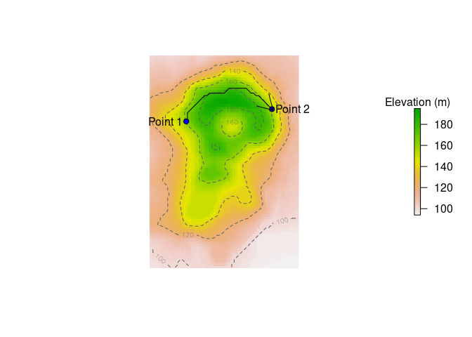

Estimate the cost of travel on a geographic grid, taking into account factors such as terrain, slope, or wind or current speeds.
Installation
## install.packages("remotes") ## if needed
devtools::install_github("AustralianAntarcticDivision/travelcost")Example: the cost of walking over hilly terrain
Let’s use the volcano example data as an elevation raster:
library(travelcost)
library(raster)
dem <- raster(volcano)
projection(dem) <- "+proj=laea +lat_0=-50"
## 10m spatial resolution
extent(dem) <- c(xmin = 0, xmax = ncol(dem) * 10, ymin = 0, ymax = nrow(dem) * 10)
point_1 <- c(150, 600)
point_2 <- c(500, 650)
plot(dem, legend.args = list(text = "Elevation (m)"), axes = FALSE, box = FALSE)
contour(dem, add = TRUE, lty = 2, levels = c(100, 120, 140, 160, 180), col = "#606060")
points(point_1[1], point_1[2], col = 1, bg = "blue", pch = 21)
text(point_1[1], point_1[2], "Point 1", adj = 1.1)
points(point_2[1], point_2[2], col = 1, bg = "blue", pch = 21)
text(point_2[1], point_2[2], "Point 2", adj = -0.1)We wish to find the most energetically-efficient path to follow to get from point 1 to point 2.
The energetic cost of walking as a function of slope, given by Minetti et al. (2002) is:
## i is the slope
cw <- function(i) 280.5 * i^5 - 58.7 * i^4 - 76.8 * i^3 + 51.9 * i^2 + 19.6 * i + 2.5 ## J/kg/mThus, the cost of walking from one cell to another depends on their distance apart and the gradient between them:
edgecost <- function(from, to) {
## coordinates are projected, so use Euclidean distance
dist <- sqrt((from[[1]] - to[[1]])^2 + (from[[2]] - to[[2]])^2)
start_elev <- extract(dem, from)
end_elev <- extract(dem, to)
slope <- (end_elev - start_elev) / dist
## keep slope to the range -0.5 to 0.5, for which the cw equation is valid
slope <- pmax(pmin(slope, 0.5), -0.5)
## cost is cw(slope) in J/kg/m, multiplied by distance (m)
cw(slope) * dist
}Now we can build our travelcost graph and weight the edges according to the edgecost function:
g <- tc_build_graph(dem)
g <- tc_set_edge_weights(g, fun = edgecost)And finally use it to find the most energetically-efficient path between our two points:
p <- tc_shortest_paths(g, from = point_1, to = point_2)[[1]]
plot(dem, legend.args = list(text = "Elevation (m)"), axes = FALSE, box = FALSE)
contour(dem, add = TRUE, lty = 2, levels = c(100, 120, 140, 160, 180), col = "#606060")
lines(p[, 1], p[, 2])
points(point_1[1], point_1[2], col = 1, bg = "blue", pch = 21)
text(point_1[1], point_1[2], "Point 1", adj = 1.1)
points(point_2[1], point_2[2], col = 1, bg = "blue", pch = 21)
text(point_2[1], point_2[2], "Point 2", adj = -0.1)
plast <- tail(p, 2)
arrows(plast[1, 1], plast[1, 2], plast[2, 1], plast[2, 2])
The optimal path roughly follows the contour of the terrain, as you would expect.